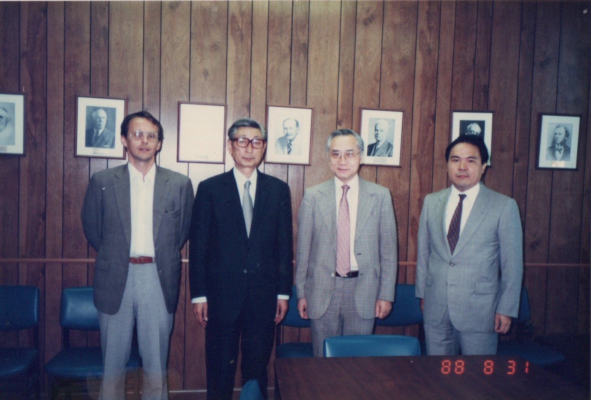

譚ｾ莠慕皮ｩｶ螳､縺ｨ縺・≧蜴溽せ窶披疲脈譁ｰ諤ｧ繧貞撫繧上ｌ縺滓律縲・/h2>
譌ｩ遞ｲ逕ｰ螟ｧ蟄ｦ蟒ｺ遽牙ｭｦ遘代・譚ｾ莠墓ｺ仙誓遐皮ｩｶ螳､縺ｫ蜈･縺｣縺溘→縺阪√◎縺薙・蜊倥↑繧句ｷ･蟄ｦ縺ｮ謨吝ｮ､縺ｧ縺ｯ縺ｪ縺九▲縺溘よ收莠募・逕溘・闖顔ｫｹ貂・ｨ薙ｄ鮟貞ｷ晉ｴ遶繧峨→謇九ｒ邨・∩縲∵眠縺励＞讒矩遨ｺ髢薙ｒ蟒ｺ遽臥阜縺ｫ蝠上＞邯壹￠縺ｦ縺・◆蟒ｺ遽画ｧ矩縺ｮ髱ｩ譁ｰ閠・□縺｣縺溘ら皮ｩｶ繝・・繝槭↓縺ｯ蟶ｸ縺ｫ縲梧脈譁ｰ諤ｧ縲阪′豎ゅａ繧峨ｌ縺溘ゅ◎繧後・謚陦薙・邊ｾ蠎ｦ繧剃ｸ翫￡繧九□縺代〒縺ｯ雜ｳ繧翫↑縺・∽ｽ輔′譁ｰ縺励＞縺九ｒ蝠上＞邯壹￠繧阪√→縺・≧隕∵ｱゅ□縺｣縺溘・
菫ｮ螢ｫ隲匁枚縺ｧ蜿悶ｊ邨・ｓ縺縺ｮ縺ｯ縲・span class="term">蜀ｷ蜊ｴ蝪斐・鬚ｨ蝨ｧ蜉帙ｒ閠・・縺励◆蠢懃ｭ碑ｧ｣譫・/span>縲阪□縺｣縺溘ら肇讌ｭ譁ｽ險ｭ迚ｹ譛峨・蟾ｨ螟ｧ縺ｪ繧ｷ繧ｧ繝ｫ讒矩縺ｫ蜒阪￥鬚ｨ蝨ｧ縺ｫ繧医ｋ蠢懷鴨繧定ｧ｣縺上％縺ｮ遐皮ｩｶ縺ｯ縲∫樟雎｡繧呈焚逅・Δ繝・Ν縺ｫ關ｽ縺ｨ縺苓ｾｼ繧險鍋ｷｴ縺ｨ縺励※遘√・蝨溷床繧偵▽縺上▲縺溘・
蜊壼｣ｫ隲匁枚縺ｯ縺輔ｉ縺ｫ豺ｱ驛ｨ縺ｸ縺ｨ雕上∩霎ｼ繧薙□縲ゅ・span class="term">繧ｷ繧ｧ繝ｫ讒矩迚ｩ縺ｮ菴咲嶌蟾ｮ繧定・・縺励◆蝨ｰ髴・ｿ懃ｭ碑ｧ｣譫舌・蝓ｺ遉守噪遐皮ｩｶ縲坂披泌慍髴・ｳ｢縺悟､ｧ蝨ｰ繧剃ｼ昴ｏ繧矩圀縺ｫ逕溘§繧区凾髢鍋噪縺ｪ繧ｺ繝ｬ・井ｽ咲嶌蟾ｮ・峨′縲√す繧ｧ繝ｫ讒矩縺ｮ蜍慕噪謖吝虚繧偵＞縺九↓螟峨∴繧九°縲ゅ％縺ｮ蝠上＞縺ｯ縲∝腰邏斐↑荳轤ｹ蜈･蜉帙〒縺ｯ隕九∴縺ｪ縺九▲縺溽樟螳溘・蝨ｰ髴・ｿ懃ｭ斐・隍・尅縺輔ｒ辣ｧ繧峨＠蜃ｺ縺励◆縲・
讒矩迚ｩ縺ｮ縲碁剞逡後阪ｒ遏･繧九％縺ｨ縺ｯ縲∫､ｾ莨壹・縲悟ｮ牙・縲阪ｒ險ｭ險医☆繧九％縺ｨ縺ｫ遲峨＠縺・らｵょｱ隗｣譫舌→縺ｯ縲∝｣翫ｌ譁ｹ繧貞ｭｦ縺ｶ縺薙→縺ｧ縲∝｣翫ｌ縺ｪ縺・､ｾ莨壹ｒ縺､縺上ｋ蝟ｶ縺ｿ縺縺｣縺溘・/p>
遶ｹ荳ｭ蟾･蜍吝ｺ玲橿陦鍋皮ｩｶ謇窶披皮ｵょｱ縺ｾ縺ｧ霑ｽ縺・ｧ｣譫舌・蜩ｲ蟄ｦ
遶ｹ荳ｭ蟾･蜍吝ｺ玲橿陦鍋皮ｩｶ謇縺ｧ縺ｮ荳ｻ隕√↑莉穂ｺ九・縲・span class="term">蜴溷ｭ千ｉ蟒ｺ螻九・蝨ｰ髴・凾縺ｫ縺翫￠繧矩延遲九さ繝ｳ繧ｯ繝ｪ繝ｼ繝域ｧ矩縺ｮ邨ょｱ隗｣譫・/span>縺縺｣縺溘ゅ檎ｵょｱ縺ｾ縺ｧ縲阪→縺・≧縺ｮ縺ｯ蟄礼ｾｩ騾壹ｊ縲∵ｧ矩迚ｩ縺悟ｴｩ螢翫↓閾ｳ繧九∪縺ｧ縺ｮ蜈ｨ繝励Ο繧ｻ繧ｹ繧呈焚蛟､逧・↓霑ｽ霍｡縺吶ｋ縲√→縺・≧諢丞袖縺縲・
騾壼ｸｸ縺ｮ險ｭ險医・縲檎ｴ螢翫＆縺帙↑縺・阪％縺ｨ繧貞燕謠舌↓縺吶ｋ縲ゅ＠縺九＠邨ょｱ隗｣譫舌・縲∽ｸ・ｸ縺ｮ莠区・縺ｫ讒矩迚ｩ縺後←縺ｮ鬆・ｺ上〒縲√←縺ｮ繧医≧縺ｫ謳榊す縺励∵怙邨ら噪縺ｫ縺ｩ縺・ｴｩ螢翫☆繧九°繧呈・繧峨°縺ｫ縺吶ｋ縲ゅ◎繧後・險ｭ險医・陬丞・縺ｫ縺ゅｋ縲悟｣翫ｌ譁ｹ縺ｮ蝨ｰ蝗ｳ縲阪ｒ謠上￥菴懈･ｭ縺縺｣縺溘ょ次蟄仙鴨譁ｽ險ｭ縺ｨ縺・≧遉ｾ莨夂噪縺ｫ譛繧ょ宍縺励＞繝ｪ繧ｹ繧ｯ邂｡逅・′豎ゅａ繧峨ｌ繧区ｧ矩迚ｩ繧貞ｯｾ雎｡縺ｫ縺励◆縺薙→縺ｧ縲∫ｧ√・縲御ｽ呵｣輔阪・譛ｬ雉ｪ窶披泌ｮ牙・陬募ｺｦ縺後←縺薙°繧臥函縺ｾ繧後√←縺薙〒蟆ｽ縺阪ｋ縺銀披斐ｒ霄ｫ菴鍋噪縺ｫ逅・ｧ｣縺励※縺・▲縺溘・
繝励Μ繝ｳ繧ｹ繝医Φ縺ｸ窶披斐ル繝･繝ｼ繝ｨ繝ｼ繧ｯ縺ｮ鞫ｩ螟ｩ讌ｼ縺梧蕗縺医◆縺薙→
譏ｭ蜥・3蟷ｴ・・988蟷ｴ・峨∫､ｾ蜻ｽ縺ｫ繧医ｋ逡吝ｭｦ縺ｧ繧｢繝｡繝ｪ繧ｫ縺ｸ貂｡縺｣縺溘よ園螻槭＠縺溘・縺ｯ繝励Μ繝ｳ繧ｹ繝医Φ螟ｧ蟄ｦ繝ｻ遽蝪壽ｭ｣螳｣遐皮ｩｶ螳､縲らｯ蝪壼・逕溘・讒矩菫｡鬆ｼ諤ｧ縺ｮ蟄ｦ閠・〒縲∵焚逅・Δ繝・Ν縺ｮ蛻・㍽縺ｧ蟄ｦ莨壹ｒ繝ｪ繝ｼ繝峨＠縺ｦ縺・◆縲ゅユ繝ｼ繝槭・繝九Η繝ｼ繝ｨ繝ｼ繧ｯ縺ｫ遶九■荳ｦ縺ｶ鬮伜ｱ､繝薙Ν縺ｮ閠宣怫繝ｻ閠宣｢ｨ讒矩縺縺｣縺溘・
譌･譛ｬ縺ｧ骰帙∴縺滓ｧ矩隗｣譫舌・謇区ｳ輔ｒ縲・｢ｨ縺ｨ蝨ｰ髴・↓縺､縺・※雜・ｫ伜ｱ､蟒ｺ遽臥黄縺ｫ驕ｩ逕ｨ縺吶ｋ謖第姶縺縺｣縺溘ゅル繝･繝ｼ繝ｨ繝ｼ繧ｯ縺ｮ鬮伜ｱ､繝薙Ν縺ｯ蝨ｰ髴・Μ繧ｹ繧ｯ繧医ｊ繧る｢ｨ闕ｷ驥阪′謾ｯ驟咲噪縺ｪ險ｭ險育腸蠅・↓鄂ｮ縺九ｌ縺ｦ縺・ｋ縲よ律譛ｬ縺ｮ讒矩蟾･蟄ｦ縺ｮ蟶ｸ隴倥ｒ縺・▲縺溘ｓ螟悶＠縲∫焚縺ｪ繧九Μ繧ｹ繧ｯ譚｡莉ｶ縺ｮ荳九〒菴輔′險ｭ險医・譛ｬ雉ｪ縺ｪ縺ｮ縺九ｒ蝠上＞逶ｴ縺咏ｵ碁ｨ薙・縲∫ｧ√・隕夜㍽繧呈ｱｺ螳夂噪縺ｫ蠎・￡縺溘・
荳也阜豌ｴ貅悶・遐皮ｩｶ閠・◆縺｡縺ｨ隴ｰ隲悶ｒ莠､繧上＠縲∬ｫ匁枚繧定恭隱槭〒譖ｸ縺堺ｸ翫￡縺溘％縺ｮ譎よ悄縺ｯ縲∵ｧ矩蟾･蟄ｦ繧偵御ｸ蝗ｽ縺ｮ謚陦薙阪〒縺ｯ縺ｪ縺上後げ繝ｭ繝ｼ繝舌Ν縺ｪ遏･縺ｮ菴鍋ｳｻ縲阪→縺励※謐峨∴逶ｴ縺吝･第ｩ溘↓縺ｪ縺｣縺溘・

蜿ｳ縺九ｉ遲・・∫ｯ蝪壽蕗謗医∵收莠墓蕗謗医・上1988蟷ｴ8譛・1譌･縲√・繝ｪ繝ｳ繧ｹ繝医Φ螟ｧ蟄ｦ縺ｫ縺ｦ
遒ｺ邇・ｫ也噪繝ｪ繧ｹ繧ｯ隧穂ｾ｡縺ｸ窶披比ｸ咲｢ｺ縺九＆繧呈焚縺医ｋ謚陦・/h2>
蟶ｰ蝗ｽ蠕・/span>
蜴溷ｭ仙鴨逋ｺ髮ｻ謇縺ｮ遒ｺ邇・ｫ也噪蝨ｰ髴・錐蛯ｷ隧穂ｾ｡・・robabilistic Seismic Damage Assessment・・/strong>縺ｫ蠕謎ｺ九よｱｺ螳夊ｫ也噪縺ｪ螳牙・隧穂ｾ｡縺九ｉ荳豁ｩ雕上∩霎ｼ縺ｿ縲∝慍髴・・蠑ｷ縺輔・荳咲｢ｺ縺九＆繝ｻ讒矩蠢懃ｭ斐・荳咲｢ｺ縺九＆繝ｻ謳榊す遒ｺ邇・ｒ遒ｺ邇・・蟶・→縺励※螳夐㍼蛹悶☆繧区焔豕輔ｒ豺ｱ繧√◆縲・/span>
荳ｦ陦後＠縺ｦ
荳闊ｬ蟒ｺ迚ｩ縺ｮ蝨ｰ髴・ｺ域Φ謳榊､ｱ繝ｪ繧ｹ繧ｯ隧穂ｾ｡縺ｸ縺ｨ蠢懃畑鬆伜沺繧呈僑螟ｧ縲ら､ｾ莨壹う繝ｳ繝輔Λ繝ｻ豌鷹俣蟒ｺ遽臥黄縺悟慍髴・↓繧医▲縺ｦ縺ｩ繧後⊇縺ｩ縺ｮ邨梧ｸ育噪謳榊､ｱ繧定｢ｫ繧九°繧剃ｺ句燕縺ｫ隧穂ｾ｡縺吶ｋ繝輔Ξ繝ｼ繝繝ｯ繝ｼ繧ｯ縺ｯ縲∝ｾ後・髦ｲ轣ｽ繝ｻ貂帷⊃險育判繧・ｿ晞匱繝ｻ驥題檮縺ｨ縺ｮ謗･轤ｹ繧堤函繧謚陦鍋噪蝓ｺ逶､縺ｨ縺ｪ縺｣縺ｦ縺・￥縲・/span>
縲瑚ｵｷ縺阪ｋ縺九←縺・°縲阪〒縺ｯ縺ｪ縺上後←縺ｮ縺上ｉ縺・・遒ｺ邇・〒縲√←縺ｮ縺上ｉ縺・・謳榊､ｱ縺檎函縺倥ｋ縺九阪ｒ蝠上≧縺薙・繧｢繝励Ο繝ｼ繝√・縲∝ｷ･蟄ｦ縺ｨ遉ｾ莨壽э諤晄ｱｺ螳壹ｒ縺､縺ｪ縺占ｨ隱槭□縺｣縺溘ゅΜ繧ｹ繧ｯ繧堤｢ｺ邇・→謳榊､ｱ縺ｮ遨阪→縺励※謐峨∴縲√◎繧後ｒ諢乗晄ｱｺ螳壹↓萓帙☆繧区橿陦薙・縲∽ｻ頑律縺ｮ繝ｪ繧ｹ繧ｯ繧ｬ繝舌リ繝ｳ繧ｹ繝ｻBCP縺ｮ譬ｸ蠢・↓縺ゅｋ縲・
譁・Κ遘大ｭｦ逵√∈縺ｮ蜃ｺ蜷鯛披斐ワ繧ｶ繝ｼ繝峨・繝・・謾ｹ螳壹・迴ｾ蝣ｴ縺ｧ
譚ｱ譌･譛ｬ螟ｧ髴・⊃縺檎匱逕溘＠縺・011蟷ｴ縲∫ｧ√・譁・Κ遘大ｭｦ逵√・蝨ｰ髴・亟轣ｽ隱ｲ縺ｫ蜃ｺ蜷代＠縺ｦ縺・◆縲よｴ･豕｢縺ｫ隱倡匱縺輔ｌ縺溷次蟄千ｉ莠区腐縺ｯ縲√◎繧後∪縺ｧ縺ｮ閾ｪ辟ｶ繝ｪ繧ｹ繧ｯ隗｣譫舌・逶ｲ轤ｹ繧堤區譌･縺ｮ荳九↓縺輔ｉ縺励◆縲・
蜃ｺ蜷大・縺ｧ遘√′逶ｮ縺ｮ蠖薙◆繧翫↓縺励◆縺ｮ縺ｯ縲∫ｧ大ｭｦ逧・衍隕九→陦梧帆逧・э諤晄ｱｺ螳壹′莠､蟾ｮ縺吶ｋ迴ｾ蝣ｴ縺ｮ邱雁ｼｵ縺縺｣縺溘よｴ･豕｢繝上じ繝ｼ繝峨・蠑ｷ蛹悶∵ｵｷ蠎戊ｦｳ貂ｬ縺梧･縺後ｌ縺溘ょｰる摩螳ｶ縺ｮ遏･隴倥′縺・°縺ｫ謾ｿ遲也ｫ区｡医＆繧後∫､ｾ莨壹↓蜿肴丐縺輔ｌ繧九°縺ｮ蜈ｨ繝励Ο繧ｻ繧ｹ縺ｫ遶九■蜷医▲縺溘・
縺薙・邨碁ｨ薙・縲∵ｧ矩蟾･蟄ｦ閠・→縺励※縺ｮ遘√↓縲∵橿陦薙→遉ｾ莨壹・髢薙↓縺ゅｋ縲檎ｿｻ險ｳ縺ｮ雋ｬ莉ｻ縲阪ｒ豺ｱ縺丞綾縺ｿ霎ｼ繧薙□縲らｲｾ邱ｻ縺ｪ繝｢繝・Ν繧呈戟縺､縺薙→縺ｨ縲√◎繧後ｒ遉ｾ莨夂噪縺ｪ諢乗晄ｱｺ螳壹↓蠖ｹ遶九※繧九％縺ｨ縺ｯ縲∝挨縺ｮ謚陦薙ｒ隕√☆繧九ゅ◎縺ｮ荳｡譁ｹ繧貞撫縺・ｶ壹￠繧九％縺ｨ縺後∫ｧ√・縺昴・蠕後・莉穂ｺ九・譬ｸ縺ｨ縺ｪ縺｣縺ｦ縺・▲縺溘・
讒矩縺ｨ繝ｪ繧ｹ繧ｯ窶披尿I譎ゆｻ｣縺ｫ蜿励￠邯吶′繧後ｋ繧ゅ・
閠宣｢ｨ縺九ｉ閠宣怫縺ｸ縲∫ｵょｱ隗｣譫舌°繧臥｢ｺ邇・ｫ也噪隧穂ｾ｡縺ｸ縲∝ｻｺ迚ｩ蜊倅ｽ薙°繧臥､ｾ莨壹う繝ｳ繝輔Λ縺ｸ縲√◎縺励※蟾･蟄ｦ縺九ｉ謾ｿ遲悶∈縲らｧ√・繧ｭ繝｣繝ｪ繧｢縺ｯ縲∝撫縺・・隗｣蜒丞ｺｦ繧剃ｸ翫￡縺ｪ縺後ｉ縲∵桶縺・檎ｳｻ縲阪・繧ｹ繧ｱ繝ｼ繝ｫ繧呈僑螟ｧ縺礼ｶ壹￠繧区羅縺縺｣縺溘→謖ｯ繧願ｿ斐ｋ縲・
莉翫、I縺梧ｧ矩隗｣譫舌→繝ｪ繧ｹ繧ｯ隧穂ｾ｡縺ｮ迴ｾ蝣ｴ縺ｫ蜈･繧願ｾｼ繧薙〒縺・ｋ縲りｨ育ｮ鈴溷ｺｦ縺ｨ邊ｾ蠎ｦ縺ｫ縺翫＞縺ｦ縲∽ｺｺ髢薙・閭ｽ蜉帙ｒ雜・∴繧句ｱ髱｢繧ら函縺ｾ繧後◆縲ゅ＠縺九＠AI縺檎ｭ斐∴繧貞・縺帙ｋ縺ｮ縺ｯ縲∽ｸ弱∴繧峨ｌ縺溘Δ繝・Ν縺ｮ遽・峇蜀・□縲ゅ←縺ｮ繝｢繝・Ν繧帝∈縺ｶ縺九∽ｽ輔ｒ縲悟些髯ｺ縲阪→螳夂ｾｩ縺吶ｋ縺九∬ｪｰ縺ｮ縺溘ａ縺ｮ繝ｪ繧ｹ繧ｯ隧穂ｾ｡縺ｪ縺ｮ縺銀披斐◎縺ｮ蝠上＞縺ｯ萓晉┯縺ｨ縺励※縲∽ｺｺ髢薙・蛻､譁ｭ縺ｨ蛟ｫ逅・↓縺九°縺｣縺ｦ縺・ｋ縲・
譚ｾ莠募・逕溘′蝠上＞邯壹￠縺溘梧脈譁ｰ諤ｧ縲阪・諢丞袖縺後∽ｻ翫↓縺ｪ縺｣縺ｦ繧医ｊ豺ｱ縺乗─縺倥ｉ繧後ｋ縲よ橿陦薙・螟峨ｏ繧九ゅ＠縺九＠蝠上＞繧呈峩譁ｰ縺礼ｶ壹￠繧句ｧｿ蜍｢縺薙◎縺後√←縺ｮ譎ゆｻ｣縺ｮ蟾･蟄ｦ縺ｫ繧ょ・騾壹☆繧矩ｭゅ□縺ｨ縲∫ｧ√・菫｡縺倥※縺・ｋ縲・